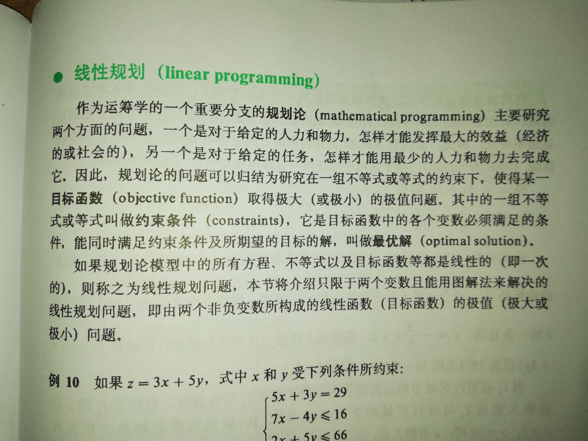
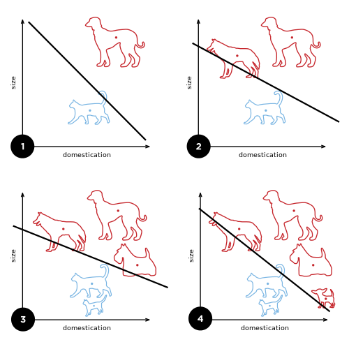

 <!DOCTYPE HTML>
<html lang="zh-CN">
<head><meta name="generator" content="Hexo 3.8.0">
  <!-- hexo-inject:begin --><!-- hexo-inject:end --><meta charset="UTF-8">
  
<script async src="//pagead2.googlesyndication.com/pagead/js/adsbygoogle.js"></script>
<script>
  (adsbygoogle = window.adsbygoogle || []).push({
    google_ad_client: "ca-pub-1474078653145626",
    enable_page_level_ads: true
  });
</script>

 
  
    <title>高中生应该能理解的神经网络入门 | 国成 Blog</title>
    <meta name="viewport" content="width=device-width, initial-scale=1,user-scalable=no">
    
    <meta name="author" content="李国成">
    

    
    <meta name="description" content="写这个 article 帮助自己消化 免费网络书 http://neuralnetworksanddeeplearning.com/ 前面俩个 chapter。尽量通俗易懂地解释神经网络和深度学习的思路。这篇文章有几个重要知识点会接触到的领域: 统计学、最优解、人工神经网络、逻辑学、偏微分。其中有大部分高中都已经接触过了，而篇幅会在阐述人工神经网络的一些概念和实现的思路，而不在具体如何实现的技术问">
<meta name="keywords" content="有难度,神经网络">
<meta property="og:type" content="article">
<meta property="og:title" content="高中生应该能理解的神经网络入门">
<meta property="og:url" content="https://cheng1999.github.io/2019/03/04/高中生应该能理解的神经网络入门/index.html">
<meta property="og:site_name" content="国成 Blog">
<meta property="og:description" content="写这个 article 帮助自己消化 免费网络书 http://neuralnetworksanddeeplearning.com/ 前面俩个 chapter。尽量通俗易懂地解释神经网络和深度学习的思路。这篇文章有几个重要知识点会接触到的领域: 统计学、最优解、人工神经网络、逻辑学、偏微分。其中有大部分高中都已经接触过了，而篇幅会在阐述人工神经网络的一些概念和实现的思路，而不在具体如何实现的技术问">
<meta property="og:locale" content="zh-CN">
<meta property="og:image" content="https://cheng1999.github.io/2019/03/04/高中生应该能理解的神经网络入门/linear_programming1.jpg">
<meta property="og:image" content="https://cheng1999.github.io/2019/03/04/高中生应该能理解的神经网络入门/perceptron1.png">
<meta property="og:image" content="https://cheng1999.github.io/2019/03/04/高中生应该能理解的神经网络入门/linear_programming2.jpg">
<meta property="og:image" content="https://cheng1999.github.io/2019/03/04/高中生应该能理解的神经网络入门/linear_programming3.png">
<meta property="og:image" content="https://cheng1999.github.io/2019/03/04/高中生应该能理解的神经网络入门/perceptron_graph1.png">
<meta property="og:image" content="https://cheng1999.github.io/2019/03/04/高中生应该能理解的神经网络入门/perceptron_graph2.png">
<meta property="og:image" content="https://cheng1999.github.io/2019/03/04/高中生应该能理解的神经网络入门/perceptron2.png">
<meta property="og:image" content="https://cheng1999.github.io/2019/03/04/高中生应该能理解的神经网络入门/funcgraf_perceptron.png">
<meta property="og:image" content="https://cheng1999.github.io/2019/03/04/高中生应该能理解的神经网络入门/funcgraf_sigmoid.png">
<meta property="og:image" content="https://cheng1999.github.io/2019/03/04/高中生应该能理解的神经网络入门/valley_with_ball.png">
<meta property="og:updated_time" content="2019-03-31T15:12:14.785Z">
<meta name="twitter:card" content="summary">
<meta name="twitter:title" content="高中生应该能理解的神经网络入门">
<meta name="twitter:description" content="写这个 article 帮助自己消化 免费网络书 http://neuralnetworksanddeeplearning.com/ 前面俩个 chapter。尽量通俗易懂地解释神经网络和深度学习的思路。这篇文章有几个重要知识点会接触到的领域: 统计学、最优解、人工神经网络、逻辑学、偏微分。其中有大部分高中都已经接触过了，而篇幅会在阐述人工神经网络的一些概念和实现的思路，而不在具体如何实现的技术问">
<meta name="twitter:image" content="https://cheng1999.github.io/2019/03/04/高中生应该能理解的神经网络入门/linear_programming1.jpg">

    
    <link rel="alternative" href="/atom.xml" title="国成 Blog" type="application/atom+xml">
    
    
    <link rel="icon" href="/img/logo.png">
    
    
    <link rel="stylesheet" href="/css/style.css"><!-- hexo-inject:begin --><!-- hexo-inject:end -->
</head>
</html>
  <body>
    <!-- hexo-inject:begin --><!-- hexo-inject:end --><header>
      
<div>
		
			<div id="imglogo">
				<a href="/"></a>
			</div>
			
			<div id="textlogo">
				<h1 class="site-name"><a href="/" title="国成 Blog">国成 Blog</a></h1>
				<h2 class="blog-motto">cheng1999</h2>
			</div>
			<div class="navbar"><a class="navbutton navmobile" href="#" title="菜单">
			</a></div>
			<nav class="animated">
				<ul>
					<ul>
					 
						<li><a href="/">Blog</a></li>
					
						<li><a href="/archives">归档</a></li>
					
						<li><a href="/about">关于</a></li>
					
					<li>
 					
					<form class="search" action="/search/index.html" method="get" accept-charset="utf-8">
						<label>Search</label>
						<input type="search" id="search" autocomplete="off" name="q" maxlength="20" placeholder="搜索">
					</form>
					
					</li>
				</ul>
			</ul></nav>			
</div>
    </header>
    <div id="container">
      <div id="main" class="post" itemscope itemprop="blogPost">
  
	<article itemprop="articleBody"> 
		<header class="article-info clearfix">
  <h1 itemprop="name">
    
      <a href="/2019/03/04/高中生应该能理解的神经网络入门/" title="高中生应该能理解的神经网络入门" itemprop="url">高中生应该能理解的神经网络入门</a>
  </h1>
  <p class="article-author">By
       
		<a href="/about" title="李国成" target="_blank" itemprop="author">李国成</a>
		
  </p><p class="article-time">
    <time datetime="2019-03-04T09:24:24.000Z" itemprop="datePublished"> 发表于 2019-03-04</time>
    
  </p>
</header>
	<div class="article-content">
		
		<div id="toc" class="toc-article">
			<strong class="toc-title">文章目录</strong>
		
			<ol class="toc"><li class="toc-item toc-level-2"><a class="toc-link" href="#思路的开始"><span class="toc-number">1.</span> <span class="toc-text">思路的开始</span></a></li><li class="toc-item toc-level-2"><a class="toc-link" href="#损失函数-和-最优解-概念"><span class="toc-number">2.</span> <span class="toc-text">损失函数 和 最优解 概念</span></a></li><li class="toc-item toc-level-2"><a class="toc-link" href="#神经网络"><span class="toc-number">3.</span> <span class="toc-text">神经网络</span></a><ol class="toc-child"><li class="toc-item toc-level-3"><a class="toc-link" href="#感知器"><span class="toc-number">3.1.</span> <span class="toc-text">感知器</span></a></li><li class="toc-item toc-level-3"><a class="toc-link" href="#进一步了解感知机原理"><span class="toc-number">3.2.</span> <span class="toc-text">进一步了解感知机原理</span></a></li><li class="toc-item toc-level-3"><a class="toc-link" href="#前馈网络"><span class="toc-number">3.3.</span> <span class="toc-text">前馈网络</span></a></li><li class="toc-item toc-level-3"><a class="toc-link" href="#Sigmoid-神经元"><span class="toc-number">3.4.</span> <span class="toc-text">Sigmoid 神经元</span></a></li></ol></li><li class="toc-item toc-level-2"><a class="toc-link" href="#损失函数"><span class="toc-number">4.</span> <span class="toc-text">损失函数</span></a></li><li class="toc-item toc-level-2"><a class="toc-link" href="#梯度下降"><span class="toc-number">5.</span> <span class="toc-text">梯度下降</span></a></li><li class="toc-item toc-level-2"><a class="toc-link" href="#反向传播"><span class="toc-number">6.</span> <span class="toc-text">反向传播</span></a></li><li class="toc-item toc-level-2"><a class="toc-link" href="#不负责任尾声"><span class="toc-number">7.</span> <span class="toc-text">不负责任尾声</span></a></li><li class="toc-item toc-level-2"><a class="toc-link" href="#参考"><span class="toc-number">8.</span> <span class="toc-text">参考</span></a></li></ol>
		
		</div>
		
		<p>写这个 article 帮助自己消化 免费网络书 <a href="http://neuralnetworksanddeeplearning.com/" target="_blank" rel="noopener">http://neuralnetworksanddeeplearning.com/</a> 前面俩个 chapter。尽量通俗易懂地解释神经网络和深度学习的思路。<br>这篇文章有几个重要知识点会接触到的领域: 统计学、最优解、人工神经网络、逻辑学、偏微分。其中有大部分高中都已经接触过了，而篇幅会在阐述人工神经网络的一些概念和实现的思路，而不在具体如何实现的技术问题上。若想要付与行动实现，或更入清楚了解哪<strong>强烈建议去看回原作</strong>。<br><a id="more"></a></p>
<h2 id="思路的开始"><a href="#思路的开始" class="headerlink" title="思路的开始"></a>思路的开始</h2><p>有果必有因，假设这个因果关系只有上帝能解释清楚，但我们可以透过经验知道什么因导致什么果，然后汲取经验猜因果关系，由因预测果。<br>我们都是懒虫，想把这个工作交给电脑做。 要把这个过程变成数学工具能处理的东西，以下是很蠢的例子:</p>
<blockquote>
<p><strong>而我不知道小花为什么会生气，只有上帝知道。</strong></p>
<p><strong>经验:</strong></p>
<ul>
<li>给小花巧克力 - 小花很快乐</li>
<li>给小花巧克力，再跟小花讲数学 - 小花生气</li>
</ul>
<p><strong>因:</strong></p>
<ul>
<li>给小花巧克力</li>
<li>跟小花讲数学</li>
</ul>
<p><strong>学习 - 经验猜出来的因果关系:</strong></p>
<ul>
<li>给小花一块巧克力 是 $+1$</li>
<li>跟小花讲一次数学 是 $-2$</li>
<li><strong>$\sum$因 $\leq 2$</strong> 是 小花生气</li>
<li><strong>$\sum$因 $&gt; 2$</strong> 是 小花快乐</li>
</ul>
<p><strong>预测 - 用猜出来的因果关系来预测果:</strong></p>
<ul>
<li>给小花俩三块巧克力，再跟小花讲一次数学 - 小花很快乐</li>
</ul>
</blockquote>
<h2 id="损失函数-和-最优解-概念"><a href="#损失函数-和-最优解-概念" class="headerlink" title="损失函数 和 最优解 概念"></a>损失函数 和 最优解 概念</h2><p>这个部分我们的高一数学已经接触过了它的核心概念，只是针对要解决的问题而方法不同。<br></p>
<p><strong>比如</strong> -</p>
<ul>
<li>$y(x)$ 是上帝才能解释清楚的函数</li>
<li>$f(x)$ 是我们猜出来的函数</li>
</ul>
<p>在机械学习中，我们需要:</p>
<ul>
<li>知道我们错得有多离谱<br>设计一个能对比 $y(x)$ 和 $f(x)$ ，表示他们之间的差别 来知道我们错得有多离谱的 <em>损失函数(lost function)</em>。</li>
<li>减少这个离谱程度。<br>调整 $f(x)$ 使 损失函数 最小。进而得出 $f(x)$ <em>最优解(optimal solution)</em>。<br>如果对这个减少离谱程度的过程还没有概念的话可以再看看高三学的牛顿法。</li>
</ul>
<p>值得一提的是，所有机械学习都需要 最优化，而最优化的对象就是损失函数。</p>
<p>如何设计 损失函数 和得到 最优解我们在后面会谈到，这里先明白有这种操作方便后面理清思路。</p>
<h2 id="神经网络"><a href="#神经网络" class="headerlink" title="神经网络"></a>神经网络</h2><blockquote>
<p>如果世界有一个部分是大脑的基础逻辑所不能建构的，哪我们的世界就不会有这一个部分。 ——国成乱掰<br>p/s: 后来还发现 量子力学 里面好像就有一个 shutup and calculate 说法。</p>
</blockquote>
<h3 id="感知器"><a href="#感知器" class="headerlink" title="感知器"></a>感知器</h3><p>重点的问题来了，我们该如何设计 $f(x)$ ？<br>参考奇妙的大脑来设计 $f(x)$，设计人工神经网络。这个概念和其中的模型是1943年心理学家 Warren McCulloch 和数理逻辑学家 Walter Pitts 一起在论文发表的 。这里介绍一种名叫 <em>感知器(perceptron)</em>  的人工神经网络，是神经学家 Frank Rosenblatt 提出，1957年才成功仿真 <a href="https://zh.wikipedia.org/wiki/感知器" target="_blank" rel="noopener">[link]</a>。<br>好像神经元，感知器可以接受多方的“刺激(输入)”，若刺激达到阈值就会产生“神经冲动(输出)”:<br><br>如图，我们的感知器接受了 $x_1,x_2,x_3$ 的刺激，感知机对每个刺激赋予 <em>权重(weight)</em> $w_1,w_2,w_3$，表示该刺激的重要性(或产生的影响力)；若刺激达到了 <em>阈值(threshold)</em> 则产生冲动，输出1；反之则输出0。</p>
<p>$$<br>\text{output} = \begin{cases}<br> 0&amp; \text{ if } \sum_iw_ix_i \leq \text{threshold} \\<br> 1&amp; \text{ if } \sum_iw_ix_i &gt; \text{threshold}<br>\end{cases}<br>$$</p>
<p>这个函数是以二分法为基础，我们可以用之前 <a href="#思路的开始">小花的例子</a> 来一窥这个 感知器 的函数:</p>
<blockquote>
<p><strong>学习 - 经验猜出来的因果关系:</strong></p>
<ul>
<li>给小花一块巧克力 是 $+1$</li>
<li>跟小花讲一次数学 是 $-2$</li>
<li><strong>$\sum$因 $\leq 2$</strong> 是 小花生气</li>
<li><strong>$\sum$因 $&gt; 2$</strong> 是 小花快乐</li>
</ul>
</blockquote>
<p>把这段意思翻译给 感知器:</p>
<blockquote>
<ul>
<li>$x_1 $ 为给小花的巧克力， $w_1$ 表示小花有多喜欢巧克力 (即其值为 1)</li>
<li>$x_2 $ 为跟小花讲数学的次数，$w_2$ 表示小花有多喜欢数学 (即其值为 -2)</li>
<li>阈值 threshold 为 2</li>
</ul>
</blockquote>
<blockquote>
<p>给小花三块巧克力 $x_1=3$，<br>再跟小花讲一次数学 $x_2=1$</p>
<p>$<br>\sum_iw_ix_i\ \\<br>= w_1x_1 + w_2x_2 \\<br>= 1(3) + -2(1) &gt; \text{threshold} \\$<br>$\therefore$ 小花终于甘心听讲数学了。</p>
</blockquote>
<p>为了方便我们处理，让 $b \equiv  -\text{threshold}$，感知器函数重写为<br><a id="感知器函数"></a><br>$$<br>\text{output} = \begin{cases}<br> 0&amp; \text{ if } \sum_iw_ix_i + b\leq 0 \\<br> 1&amp; \text{ if } \sum_iw_ix_i + b &gt; 0<br>\end{cases}<br>$$<br>理工班的同学应该会管这个 $b$ 叫 <em>偏压(bias)</em>，说不定还发现 感知器 能组合成为 <em>逻辑闸(logic gate)</em> 呢！<br><strong>重要的一点是，我们只要调整这些 权重 和 偏压 到适合的值，我们的神经网络就可以给做比较正确预测了！</strong></p>
<h3 id="进一步了解感知机原理"><a href="#进一步了解感知机原理" class="headerlink" title="进一步了解感知机原理"></a>进一步了解感知机原理</h3><p>受 <a href="#损失函数">刚刚那个高一课本</a> 那一页下面给的例子启发，<br></p>
<p>我们用同样的原理，设z变量来观察全局。<br>以小花的例子:</p>
<blockquote>
<ul>
<li>$x_1$ 对应 $y$ 轴；</li>
<li>$x_2$ 对应 $x$ 轴；</li>
<li>令 $z = w_1x_1 + w_2x_2 + b$</li>
</ul>
</blockquote>
<p>得出以下的函数图，直线为 $z$。把函数图区分成俩边，A区 和 B区。<br><br>可以发现到，我们调整 权重 和 偏压 其实是调整z线的 斜率 和 截距。维基百科有个更直观的例子来阐述二分法的性质(图)：<br></p>
<blockquote>
<p>这些函数关系可视化例子都是 1维、2维 的，但实际的操作中我们可能会遇到 n 个需要处理的 $x_i$，也就是说有 n 个维度，但方法都是不变的，只是我们要用<strong>向量的数学工具</strong>来处理这些问题。</p>
</blockquote>
<h3 id="前馈网络"><a href="#前馈网络" class="headerlink" title="前馈网络"></a>前馈网络</h3><p>新的问题产生了，这种感知机只能用一条直线做二分法。面对 线性不可分 的情况，它几乎是束手无策阿。<br></p>
<p>但是多层感知机机可以，多个组合成为正意义上的人工神经网络。照书给的模型叫 <em>前馈网络(feed forward network)</em>， 这种人工神经网络可以分为三层: <em>输入层(input layer)、隐藏层(hidden layer)、输出层(output layer)</em>。<br></p>
<p>用 $f_{li}(x)$ 表示神经网络中第 $l$ 层 地 $i$ 个感知机， $x_1,x_2$ 为输入的值。<br>哪整个神经网络可以勉强这样用函数表示:</p>
<p>$$<br>f_{31}\begin{pmatrix}<br> f_{21}<br>  \begin{pmatrix}<br>   f_{11}(x_{1}),\\<br>   f_{12}(x_{2})\:\\<br>  \end{pmatrix},\\<br> f_{22}<br>  \begin{pmatrix}<br>   f_{11}(x_{1}),\\<br>   f_{12}(x_{2})\:\\<br>  \end{pmatrix},\\<br> f_{23}<br>  \begin{pmatrix}<br>   f_{11}(x_{1}),\\<br>   f_{12}(x_{2})\:\\<br>  \end{pmatrix}\:\\<br> \end{pmatrix}<br>$$</p>
<p>如果感觉混乱的话可以看看这个每层只有一个 感知器 的简化版:<br>$$<br>f_3(f_2(f_1(x_1,x_2)))<br>$$</p>
<p>这个设计下，我们的 神经网络 需要调整的变量有 </p>
<blockquote>
<ul>
<li>神经网络有几层</li>
<li>各层有几个感知机</li>
<li>每个感知机的 权重 和 偏压</li>
</ul>
</blockquote>
<p>我们的模型中，需要训练的变量是 每个感知机的 权重 和 偏压。而前俩者我也说不清，大概就是依靠自己的数学直觉来设定吧。<br>到目前位置应该算是掌握了最早的人工神经网络原型，设计出了第一个 $f(x)$，下一步应该要为 $f(x)$ 来定制 损失函数。</p>
<h3 id="Sigmoid-神经元"><a href="#Sigmoid-神经元" class="headerlink" title="Sigmoid 神经元"></a>Sigmoid 神经元</h3><p>可是我们发现到 <a href="#感知器函数">感知器函数</a> 是不连续的，对于我们要使用 牛顿法、梯度下降 这类依赖导数的最优化手段，要怎么设计它可导的 损失函数 呢？我 google、阅读了别人的 article 一个下午还算是看懂了，因为不是平常我们接触的类型，我不想+懒惰解释。</p>
<p>想跟我一样去折腾这个的同学请:<br><a href="https://www.leiphone.com/news/201706/QFydbeV7FXQtRIOl.html" target="_blank" rel="noopener">https://www.leiphone.com/news/201706/QFydbeV7FXQtRIOl.html</a> | <a href="https://zh.wikipedia.org/wiki/感知器#结构" target="_blank" rel="noopener">https://zh.wikipedia.org/wiki/感知器#结构</a> </p>
<p>这里把 感知器 替换为另一个在 感知器 的基础上 改进的 <em>Sigmoid 神经元(sigmoid neurons)</em>。<br>$$\sigma(z) \equiv \frac{1}{1+e^{-z}}$$<br>其中 $z=\sum_i w_ix_i-b$<br>我们来对比 感知器函数 和 Sigmoid函数:<br> </p>
<p>Sigmoid 的函数连续方便求导外，最重要的一个是 权重 或 偏压 小小的变化不至于像 感知器 一样导致下一层的神经元乃至整个神经网络输出彻底地改变。二分法方面，我们还可以得到不仅仅是 是与非 的结果，还有其概率(多靠近 1 或 多靠近 0)。</p>
<h2 id="损失函数"><a href="#损失函数" class="headerlink" title="损失函数"></a>损失函数</h2><p>想知道我猜的函数像不像“上帝函数”，在机械学习的情况下牵涉到大量对比 $y(x)$ 和 $f(x)$ 的样本，因此我们设计 损失函数 时需要用到 统计学。<br>遵循着我读的书，作者给的 损失函数 是:<br>$$<br>C = \frac{1}{2n} \sum_i || y(x_i) - f(x_i) || ^2<br>$$<br>它的名字叫 <em>均方误差(Mean squared error)</em>，其中的 n 是数据的总数(经验)。 好好学习不缺课的同学可能会发现这个跟 <em>方差(variance)</em> $\frac{1}{n}\sum (x_{i} - \bar{x})^2$ 很像。<br>但其中最大的不同的是:</p>
<ul>
<li><strong>均方误差</strong> —— <em><strong>预测数据</strong></em> 与 <em><strong>真实数据</strong></em> 的“误差”。</li>
<li><strong>方差</strong> —— <em><strong>数据</strong></em> 和其 <em><strong>平均数</strong></em> 的“误差”，或者离中的趋势。</li>
</ul>
<p>但是我不明白为什么书里给的 <em>均方误差</em> 公式还有乘以 $\frac{1}{2}$ 的系数，一个区区的常数其实不影响我们对 损失函数 求最优解。我只知道后来对它求偏导数可以让式子看起来比较简洁(因为 $\frac{1}{2}$ 的系数被约了)。</p>
<h2 id="梯度下降"><a href="#梯度下降" class="headerlink" title="梯度下降"></a>梯度下降</h2><p>本来觉得用我们熟悉的 牛顿法 会容易解释，可是在多维度下之前说的所谓 “向量的数学工具” 其实是一个专门的学科叫 线性代数，在牛顿法求最优解里需要用到 <em>海森矩阵(Hessian Matrix)</em>。老实说这个超过我目前的范围了，我们还是用书里比较容易的 <em>梯度下降(Gradient Descent)</em> 例子，顺便省掉解释 一些线性代数处理的功夫吧。</p>
<p>想象有一个简单的损失函数 $C(v_1,v_2)$ 构成的三维函数图像，好像现实世界一样球因为重力而产生往谷底方向的加速度使球滚下去:<br></p>
<p>随机把球放在一个位置，移动球$\Delta C$ 来达到谷底(最优解)。我们要找球在这个位子上的 梯度 <em>(通俗的了解就是函数对应各个方向的斜率)</em>。$(\frac{\partial C}{\partial v_1}, \frac{\partial C}{\partial v_2})$ 的值 进而找到 $\Delta C$。以下我们以 $C(v_1,v_2)$ 在 $v_1$ 方向上的 变化率 为 $\Delta C_{v_1}$，<br>$$<br>\Delta C_{v_1} \approx \frac{\partial C}{\partial v_1} \Delta v_1 \\<br>\Delta v_1 = -\eta\frac{\partial C}{\partial v_1}<br>$$<br>$\Delta v_1$ 一项中，$\eta$ 是一个常数，叫 <em>学习率(learning rate)</em>，他的大小可以影响 $\Delta C$ 大小。俩式合并，我们可以看到 $\Delta v_1$ 的设计是为了确保 $\Delta C_{v_1}$ 是一直往谷底的方向去的 :<br>$$<br>\Delta C_{v_1} \approx -\eta{\frac{\partial C}{\partial v_1}}^2<br>$$<br>因为 ${\frac{\partial C}{\partial v_1}}^2 \geq 0$，再乘以常数 $-\eta$ 能确保 $\Delta C_{v_1}$ 总是为负数(向下)。多维度下，用线性代数的符号表示:<br>$$<br>\nabla C \equiv<br>\begin{pmatrix}<br>\frac{\partial C}{\partial v_1}, \frac{\partial C}{\partial v_2}<br>\end{pmatrix}^T\\<br>\Delta v = -\eta \nabla C \\<br>\Delta C \approx \nabla C\cdot \Delta v = -\eta||\nabla C||^2<br>$$<br>我们根据 梯度 来调整 $\Delta x$ 来移动 “球”$\Delta C$， 再使 $C’ =  C - \Delta C$， 并且不停地迭代下去，直到靠近谷底 $C \to 0$ ，或者 $\nabla C \to 0$。当然如果 损失函数 有俩个或以上 谷 的情况，我们只能到达其中一个 谷 (希望它是最低的)。</p>
<p>我们把这个概念引用在真正我们要解决的用于学习的 <a href="#损失函数">损失函数</a>，找到相应的 $w,b$，这个实现神经网络深度学习的思路算是告一段落了。</p>
<h2 id="反向传播"><a href="#反向传播" class="headerlink" title="反向传播"></a>反向传播</h2><p>如果在上世纪 50 年代你想到用梯度下降法来实现机械学习，你可能是人工智能领域里第一个有这个想法先锋。可是要实现 梯度下降 需要 <a href="#损失函数">损失函数</a> 的梯度。也就是说我们要对各个 $w,b$ 来求导才能实现梯度下降。当然数学不好的朋友可以用比较简单粗暴的做法，直接自行设定 $\Delta x$ 代入 $\frac{C(x+\Delta x) - c(x)}{\Delta x}$ 来得到近似的梯度。<br>当然高中毕业的同学就应该要优雅地把学来的那套微积分应用出来阿！这里应用微积分求导得到 梯度 的方法就叫做 <em>反向传播(backpropagation)</em>，从 输出层 开始用 <em>链导法(chain rule)</em> 一层一层求导，往前得到某层特定 w,b 的偏导。它的本质就是简单的 链导法。首先我们来整理 Sigmoid神经元 组成网络的函数，如果不用 线性函数 的那套，看上去应该像这样:</p>
<p>$$<br>\sigma_{31}\begin{pmatrix}<br> \sigma_{21}<br>  \begin{pmatrix}<br>   \sigma_{11}(x_{1}),\\<br>   \sigma_{12}(x_{2})\:\\<br>  \end{pmatrix},\\<br> \sigma_{22}<br>  \begin{pmatrix}<br>   \sigma_{11}(x_{1}),\\<br>   \sigma_{12}(x_{2})\:\\<br>  \end{pmatrix},\\<br> \sigma_{23}<br>  \begin{pmatrix}<br>   \sigma_{11}(x_{1}),\\<br>   \sigma_{12}(x_{2})\:\\<br>  \end{pmatrix}\:\\<br> \end{pmatrix}<br>$$<br>用 $\sigma_{li}(z_{li})$ 表示神经网络中第 l 层 地 i 个 Sigmoid神经元， $x1,x2$ 为输入的值。</p>
<p>我们知道$z=\sum_i w_ix_i-b$，哪<br>$$\sigma_{li} = \sigma(\sum_i w_{li}\sigma_{l-1,i} - b_{li})$$<br>在这里 $\sigma_{21}(z)$ 做例子， $z$ 就是：<br>$$<br>w_{21}\sigma_{11}(x_{1}) + w_{22}\sigma_{12}(x_{2}) + b_{21}<br>$$<br>再提醒一次，当中的 $x$ 是样本，而我们需要调整 $w$ 和 $b$ 达到适合的值以做比较正确的预测。<br>另外在每一层网络中有多个 Sigmoid神经元，也就是说“讯息”可以通过不同的 Sigmoid神经元，不同路径的事实上对应的维度也不同，$C$ 对各种 $w,b$ 得的偏导自然不同也不一样。以下不考虑路径以简化表示……<br>调整一个 $\Delta w$ 来移动 “球” $\Delta C$：<br>$$\Delta C \approx \frac{\partial C}{\partial w_{l}} \Delta w_{l}$$</p>
<p>如果想找到 $\frac{\partial C}{\partial w_{l}}$ 经过各层 Sigmoid神经元 到$l$层的偏导数，运用导链法，以下是简单可是繁琐的推导(以 $L$ 表示最外层的输出层)：<br>$$<br>\frac{\partial C}{\partial w_{l}}<br>\\<br>=<br>[<br>\frac{\partial C}{\partial \sigma_{L}}<br>]\cdot<br>[<br>\frac{\partial \sigma_{L}}{\partial \sigma_{L-1}}\cdot<br>\frac{\partial \sigma_{L-1}}{\partial w_{L-2}}<br>\ldots<br>\frac{\partial \sigma_{2+l}}{\partial \sigma_{1+l}}\cdot<br>\frac{\partial \sigma_{1+l}}{\partial \sigma_{l}}<br>]\cdot<br>[\frac{\partial \sigma_{l}}{\partial w_{l}}]<br>$$<br>把这个链分成三个部分：</p>
<ul>
<li>输入层的部分 $\frac{\partial C}{\partial \sigma_{L}}$</li>
<li>隐藏层中反向传播 $\frac{\partial \sigma_{l}}{\partial \sigma_{l-1}}$</li>
<li>目标层的 $w$ 偏导 $\frac{\partial \sigma_{l}}{\partial w_{l}}$</li>
</ul>
<p>$\sigma_{L}$ 就是 神经网络 中的 输出层的 Sigmoid神经元，负责输出结果。也就是 损失函数 $\frac{1}{2n} \sum_i || y(x_i) - f(x_i) || ^2$ 中的 $f_i$ 的输出。<br>因为这个 损失函数 是许多样本的统计，如何求导呢？我的理解是可以看作 $C_{average} = \frac{1}{n} \sum_i C_i$ ，而 $C_i \equiv \frac{|| y(x_i) - f(x_i) || ^2}{2}$，然后大胆假设 “标准损失函数”为 $C = \frac{|| y(x) - f(x) || ^2}{2} = C_{average} $。哪第一部分：<br>$$\frac{\partial C}{\partial \sigma_{L}} = y(x)-f(x)$$</p>
<p>接着我们来求 隐藏层 中俩个相连的 Sigmoid神经元 ($\sigma_l,\sigma_{l-1}$)之间的偏导：<br>$$<br>\frac{\partial \sigma_{l}}{\partial \sigma_{l-1}} = \frac{\sigma_l}{z_l} \cdot \frac{z_l}{\sigma_{l-1}}<br>\\<br>= \frac{\partial}{\partial z_l}(\frac{1}{1+e^{-z_l}}) \cdot \frac{\partial }{\partial \sigma_{l-1}}(\sum_i w_lz_{l-1} +b_{l-1})<br>\\<br>= [\sigma_l(z_l)(1-\sigma_l(z_l))] \cdot [w_l]<br>$$<br>还有链的最后一个部分：<br>$$<br>\frac{\partial \sigma_l}{\partial w_l}<br>\\<br>= \frac{\partial }{\partial w_{l}}(\sum_i w_lz_{l-1} + b_{l-1})<br>\\<br>= \sigma_{l-1}<br>$$</p>
<p>同样的思路去求 $\frac{\partial C}{\partial bl}$。</p>
<h2 id="不负责任尾声"><a href="#不负责任尾声" class="headerlink" title="不负责任尾声"></a>不负责任尾声</h2><blockquote>
<p><em><strong>“Talk is cheap. Show me the code.” ― Linus Torvalds.</strong></em></p>
</blockquote>
<p><strong>对不起，我只会说……</strong>show 不出 code，又想好好结尾，所以假假写一些屁话来尾声：</p>
<p>算法优化、以及如何真正实现请去读 <a href="http://neuralnetworksanddeeplearning.com" target="_blank" rel="noopener">这本网络书</a>，里面教从无到有建造人工神经网络，总有6章(这篇文章仅仅只是其中的头两章)。比起套个 API 来学习数据跟大家讲说“我会做AI”，还远比不过自己动手建立神经网络来的有趣和实质呢。<br>另外不能否认的是所谓的 “AI” 是个趋势，能而且深入到更多的行业。这可以是工业革命以来的另一波同样具有影响力的革命，而且冲击着、改变着我们的社会秩序。</p>
<h2 id="参考"><a href="#参考" class="headerlink" title="参考"></a>参考</h2><p><a href="http://neuralnetworksanddeeplearning.com/chap1.html" target="_blank" rel="noopener">http://neuralnetworksanddeeplearning.com/chap1.html</a><br><a href="http://neuralnetworksanddeeplearning.com/chap2.html" target="_blank" rel="noopener">http://neuralnetworksanddeeplearning.com/chap2.html</a><br><a href="https:/zh.wikipedia.org/wiki/感知器" target="_blank" rel="noopener">https:/zh.wikipedia.org/wiki/感知器</a><br><a href="https://www.leiphone.com/news/201706/QFydbeV7FXQtRIOl.html" target="_blank" rel="noopener">https://www.leiphone.com/news/201706/QFydbeV7FXQtRIOl.html</a><br><a href="https://en.wikipedia.org/wiki/Multilayer_perceptron" target="_blank" rel="noopener">https://en.wikipedia.org/wiki/Multilayer_perceptron</a></p>
  
	</div>
		<footer class="article-footer clearfix">
<div class="article-catetags">

<div class="article-categories">
  <span></span>
  <a class="article-category-link" href="/categories/数学/">数学</a>
</div>


  <div class="article-tags">
  
  <span></span> <a href="/tags/有难度/">有难度</a><a href="/tags/神经网络/">神经网络</a>
  </div>

</div>


	<div class="article-share" id="share">
	
	  <div data-url="https://cheng1999.github.io/2019/03/04/高中生应该能理解的神经网络入门/" data-title="高中生应该能理解的神经网络入门 | 国成 Blog" data-tsina class="share clearfix">
	  </div>
	
	</div>


</footer>

   	       
	</article>
	
<nav class="article-nav clearfix">
 
 <div class="prev">
 <a href="/2019/04/03/雅致物理辅导班/" title="国成雅致物理辅导班">
  <strong>上一篇：</strong><br>
  <span>
  国成雅致物理辅导班</span>
</a>
</div>


<div class="next">
<a href="/2019/01/30/学习资源整理/" title="Kopitiam POS 程序">
 <strong>下一篇：</strong><br> 
 <span>Kopitiam POS 程序
</span>
</a>
</div>

</nav>

	


</div>  
      <div class="openaside"><a class="navbutton" href="#" title="显示侧边栏"></a></div>

  <div id="toc" class="toc-aside">
  <strong class="toc-title">文章目录</strong>
 
 <ol class="toc"><li class="toc-item toc-level-2"><a class="toc-link" href="#思路的开始"><span class="toc-number">1.</span> <span class="toc-text">思路的开始</span></a></li><li class="toc-item toc-level-2"><a class="toc-link" href="#损失函数-和-最优解-概念"><span class="toc-number">2.</span> <span class="toc-text">损失函数 和 最优解 概念</span></a></li><li class="toc-item toc-level-2"><a class="toc-link" href="#神经网络"><span class="toc-number">3.</span> <span class="toc-text">神经网络</span></a><ol class="toc-child"><li class="toc-item toc-level-3"><a class="toc-link" href="#感知器"><span class="toc-number">3.1.</span> <span class="toc-text">感知器</span></a></li><li class="toc-item toc-level-3"><a class="toc-link" href="#进一步了解感知机原理"><span class="toc-number">3.2.</span> <span class="toc-text">进一步了解感知机原理</span></a></li><li class="toc-item toc-level-3"><a class="toc-link" href="#前馈网络"><span class="toc-number">3.3.</span> <span class="toc-text">前馈网络</span></a></li><li class="toc-item toc-level-3"><a class="toc-link" href="#Sigmoid-神经元"><span class="toc-number">3.4.</span> <span class="toc-text">Sigmoid 神经元</span></a></li></ol></li><li class="toc-item toc-level-2"><a class="toc-link" href="#损失函数"><span class="toc-number">4.</span> <span class="toc-text">损失函数</span></a></li><li class="toc-item toc-level-2"><a class="toc-link" href="#梯度下降"><span class="toc-number">5.</span> <span class="toc-text">梯度下降</span></a></li><li class="toc-item toc-level-2"><a class="toc-link" href="#反向传播"><span class="toc-number">6.</span> <span class="toc-text">反向传播</span></a></li><li class="toc-item toc-level-2"><a class="toc-link" href="#不负责任尾声"><span class="toc-number">7.</span> <span class="toc-text">不负责任尾声</span></a></li><li class="toc-item toc-level-2"><a class="toc-link" href="#参考"><span class="toc-number">8.</span> <span class="toc-text">参考</span></a></li></ol>
 
  </div>

<div id="asidepart">
<div class="closeaside"><a class="closebutton" href="#" title="隐藏侧边栏"></a></div>
<aside class="clearfix">

  
<div class="github-card">
<p class="asidetitle">Github 名片</p>
<div class="github-card" data-github="cheng1999" data-theme="medium"></div>
<script type="text/javascript" src="//cdn.jsdelivr.net/github-cards/latest/widget.js"></script>
</div>


  
<div class="categorieslist">
	<p class="asidetitle">分类</p>
		<ul>
		
		  
			<li><a href="/categories/其它/" title="其它">其它<sup>1</sup></a></li>
		  
		
		  
			<li><a href="/categories/数学/" title="数学">数学<sup>2</sup></a></li>
		  
		
		  
			<li><a href="/categories/电脑/" title="电脑">电脑<sup>3</sup></a></li>
		  
		
		  
			<li><a href="/categories/课外/" title="课外">课外<sup>2</sup></a></li>
		  
		
		</ul>
</div>


  
<div class="tagslist">
	<p class="asidetitle">标签</p>
		<ul class="clearfix">
		
			
				<li><a href="/tags/有点难度/" title="有点难度">有点难度<sup>4</sup></a></li>
			
		
			
				<li><a href="/tags/分享/" title="分享">分享<sup>2</sup></a></li>
			
		
			
				<li><a href="/tags/无难度/" title="无难度">无难度<sup>2</sup></a></li>
			
		
			
				<li><a href="/tags/学校/" title="学校">学校<sup>2</sup></a></li>
			
		
			
				<li><a href="/tags/有难度/" title="有难度">有难度<sup>1</sup></a></li>
			
		
			
				<li><a href="/tags/神经网络/" title="神经网络">神经网络<sup>1</sup></a></li>
			
		
		</ul>
</div>


  <div class="linkslist">
  <p class="asidetitle">友情链接</p>
    <ul>
        
          <li>
            
            	<a href="http://zypeh.github.io/" target="_blank" title="Zypeh Blog">Zypeh Blog</a>
            
          </li>
        
          <li>
            
            	<a href="https://yami.io/" target="_blank" title="Yami Blog">Yami Blog</a>
            
          </li>
        
          <li>
            
            	<a href="http://hang333.pw/" target="_blank" title="hang333 Blog">hang333 Blog</a>
            
          </li>
        
    </ul>
</div>

  <div class="rsspart">
	<a href="/atom.xml" target="_blank" title="rss">RSS 订阅</a>
</div>

</aside>
</div>
    </div>
    <footer><div id="footer">
	
	<div class="line">
		<span></span>
		<div class="author"></div>
	</div>
	
	
	<section class="info">
		<p> 关于我 ： `` 想学专业的学渣 `` <br>
			关于现实 ： `` 智商不够高就乖乖认命吧 ``</p>
	</section>
	 
	<div class="social-font">
		
		
		<a href="https://github.com/cheng1999" target="_blank" class="icon-github" title="github"></a>
		
		
		
		
		<a href="https://www.facebook.com/detective1999" target="_blank" class="icon-facebook" title="facebook"></a>
		
		
		
		
		
		
		<a href="mailto:detective1854@gmail.com" target="_blank" class="icon-email" title="Email Me"></a>
		
	</div>
			
		

		<p class="copyright">
		Powered by <a href="http://hexo.io" target="_blank" title="hexo">hexo</a> and Theme by <a href="https://github.com/wuchong/jacman" target="_blank" title="Jacman">Jacman</a> © 2019 
		
		<a href="/about" target="_blank" title="李国成">李国成</a>
		
		
		</p>
</div>
</footer>
    <script src="/js/jquery-2.0.3.min.js"></script>
<script src="/js/jquery.imagesloaded.min.js"></script>
<script src="/js/gallery.js"></script>
<script src="/js/jquery.qrcode-0.12.0.min.js"></script>

<script type="text/javascript">
$(document).ready(function(){ 
  $('.navbar').click(function(){
    $('header nav').toggleClass('shownav');
  });
  var myWidth = 0;
  function getSize(){
    if( typeof( window.innerWidth ) == 'number' ) {
      myWidth = window.innerWidth;
    } else if( document.documentElement && document.documentElement.clientWidth) {
      myWidth = document.documentElement.clientWidth;
    };
  };
  var m = $('#main'),
      a = $('#asidepart'),
      c = $('.closeaside'),
      o = $('.openaside');
  c.click(function(){
    a.addClass('fadeOut').css('display', 'none');
    o.css('display', 'block').addClass('fadeIn');
    m.addClass('moveMain');
  });
  o.click(function(){
    o.css('display', 'none').removeClass('beforeFadeIn');
    a.css('display', 'block').removeClass('fadeOut').addClass('fadeIn');      
    m.removeClass('moveMain');
  });
  $(window).scroll(function(){
    o.css("top",Math.max(80,260-$(this).scrollTop()));
  });
  
  $(window).resize(function(){
    getSize(); 
    if (myWidth >= 1024) {
      $('header nav').removeClass('shownav');
    }else{
      m.removeClass('moveMain');
      a.css('display', 'block').removeClass('fadeOut');
      o.css('display', 'none');
      
      $('#toc.toc-aside').css('display', 'none');
        
    }
  });
});
</script>

<script type="text/javascript">
$(document).ready(function(){ 
  var ai = $('.article-content>iframe'),
      ae = $('.article-content>embed'),
      t  = $('#toc'),
      ta = $('#toc.toc-aside'),
      o  = $('.openaside'),
      c  = $('.closeaside');
  if(ai.length>0){
    ai.wrap('<div class="video-container" />');
  };
  if(ae.length>0){
   ae.wrap('<div class="video-container" />');
  };
  c.click(function(){
    ta.css('display', 'block').addClass('fadeIn');
  });
  o.click(function(){
    ta.css('display', 'none');
  });
  $(window).scroll(function(){
    ta.css("top",Math.max(140,320-$(this).scrollTop()));
  });
});
</script>


<script type="text/javascript">
$(document).ready(function(){ 
  var $this = $('.share'),
      url = $this.attr('data-url'),
      encodedUrl = encodeURIComponent(url),
      title = $this.attr('data-title'),
      tsina = $this.attr('data-tsina'),
      description = $this.attr('description');
  var html = [
  '<div class="hoverqrcode clearfix"></div>',
  '<a class="overlay" id="qrcode"></a>',
  '<a href="https://www.facebook.com/sharer.php?u=' + encodedUrl + '" class="article-share-facebook" target="_blank" title="Facebook"></a>',
  '<a href="https://twitter.com/intent/tweet?url=' + encodedUrl + '" class="article-share-twitter" target="_blank" title="Twitter"></a>',
  '<a href="#qrcode" class="article-share-qrcode" title="微信"></a>',
  '<a href="http://widget.renren.com/dialog/share?resourceUrl=' + encodedUrl + '&srcUrl=' + encodedUrl + '&title=' + title +'" class="article-share-renren" target="_blank" title="人人"></a>',
  '<a href="http://service.weibo.com/share/share.php?title='+title+'&url='+encodedUrl +'&ralateUid='+ tsina +'&searchPic=true&style=number' +'" class="article-share-weibo" target="_blank" title="微博"></a>',
  '<span title="Share to"></span>'
  ].join('');
  $this.append(html);

  $('.hoverqrcode').hide();

  var myWidth = 0;
  function updatehoverqrcode(){
    if( typeof( window.innerWidth ) == 'number' ) {
      myWidth = window.innerWidth;
    } else if( document.documentElement && document.documentElement.clientWidth) {
      myWidth = document.documentElement.clientWidth;
    };
    var qrsize = myWidth > 1024 ? 200:100;
    var options = {render: 'image', size: qrsize, fill: '#2ca6cb', text: url, radius: 0.5, quiet: 1};
    var p = $('.article-share-qrcode').position();
    $('.hoverqrcode').empty().css('width', qrsize).css('height', qrsize)
                          .css('left', p.left-qrsize/2+20).css('top', p.top-qrsize-10)
                          .qrcode(options);
  };
  $(window).resize(function(){
    $('.hoverqrcode').hide();
  });
  $('.article-share-qrcode').click(function(){
    updatehoverqrcode();
    $('.hoverqrcode').toggle();
  });
  $('.article-share-qrcode').hover(function(){}, function(){
      $('.hoverqrcode').hide();
  });
});   
</script>


<link rel="stylesheet" href="/fancybox/jquery.fancybox.css" media="screen" type="text/css">
<script src="/fancybox/jquery.fancybox.pack.js"></script>
<script type="text/javascript">
$(document).ready(function(){ 
  $('.article-content').each(function(i){
    $(this).find('img').each(function(){
      if ($(this).parent().hasClass('fancybox')) return;
      var alt = this.alt;
      if (alt) $(this).after('<span class="caption">' + alt + '</span>');
      $(this).wrap('<a href="' + this.src + '" title="' + alt + '" class="fancybox"></a>');
    });
    $(this).find('.fancybox').each(function(){
      $(this).attr('rel', 'article' + i);
    });
  });
  if($.fancybox){
    $('.fancybox').fancybox();
  }
}); 
</script>


<!-- Analytics Begin -->

<script type="text/javascript">
(function(i,s,o,g,r,a,m){i['GoogleAnalyticsObject']=r;i[r]=i[r]||function(){
  (i[r].q=i[r].q||[]).push(arguments)},i[r].l=1*new Date();a=s.createElement(o),
  m=s.getElementsByTagName(o)[0];a.async=1;a.src=g;m.parentNode.insertBefore(a,m)
})(window,document,'script','//www.google-analytics.com/analytics.js','ga');
ga('create', 'UA-86417025-1', 'auto');  
ga('send', 'pageview');
</script>


<!-- Analytics End -->

<!-- Totop Begin -->

	<div id="totop">
	<a title="返回顶部"></a>
	</div>
	<script src="/js/totop.js"></script>

<!-- Totop End -->

<!-- MathJax Begin -->
<!-- mathjax config similar to math.stackexchange -->

<script type="text/x-mathjax-config">
  MathJax.Hub.Config({
    tex2jax: {
      inlineMath: [ ['$','$'], ["\\(","\\)"] ],
      processEscapes: true
    }
  });
</script>

<script type="text/x-mathjax-config">
    MathJax.Hub.Config({
      tex2jax: {
        skipTags: ['script', 'noscript', 'style', 'textarea', 'pre', 'code']
      }
    });
</script>

<script type="text/x-mathjax-config">
    MathJax.Hub.Queue(function() {
        var all = MathJax.Hub.getAllJax(), i;
        for(i=0; i < all.length; i += 1) {
            all[i].SourceElement().parentNode.className += ' has-jax';
        }
    });
</script>

<script type="text/javascript" src="https://cdn.mathjax.org/mathjax/latest/MathJax.js?config=TeX-AMS-MML_HTMLorMML">
</script>


<!-- MathJax End -->

<!-- Tiny_search Begin -->

<!-- Tiny_search End --><!-- hexo-inject:begin --><!-- hexo-inject:end -->

  </body>
</html>

